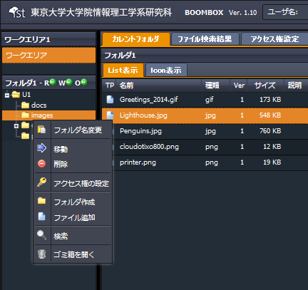
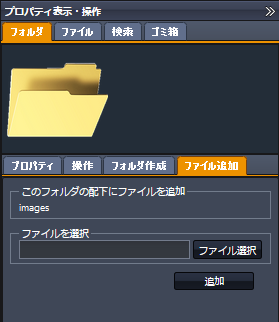
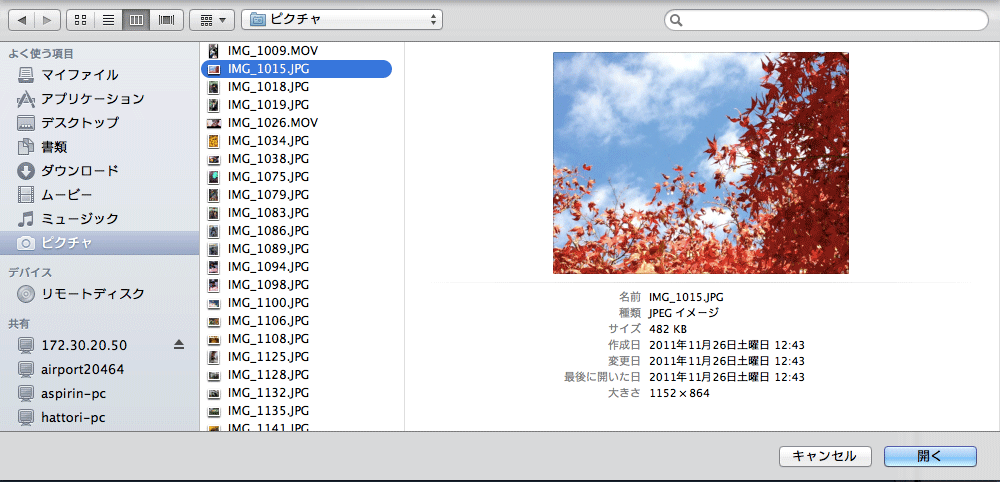
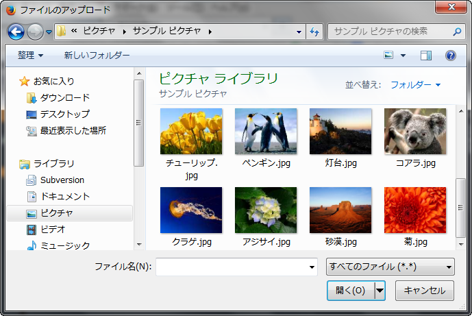
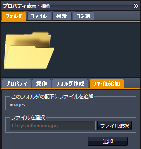
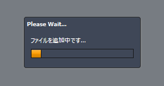
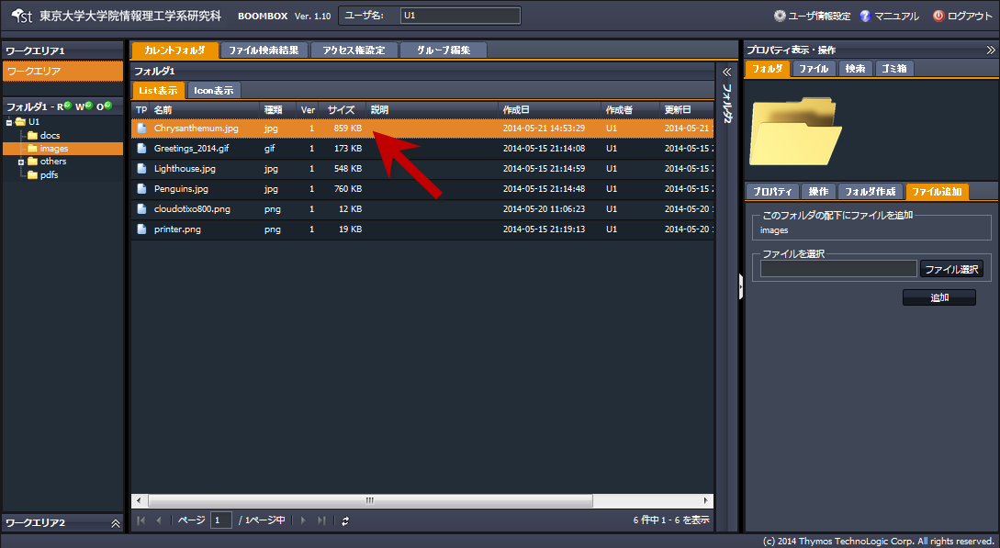

SecretFilesマニュアル
4.SecretFilesサービス(操作編)
4.2.2ファイルのアップロード
指定したフォルダにファイルをアップロードする手順を説明します。
(1) 対象フォルダを選択し右クリックメニューを開く
『ファイル追加』をクリックします。

(2) 自動的に以下構成の右ペインが開く
右ペインにて、【フォルダタプ】＋【ファイル追加タブ】が開きます。

(3) ファイル選択（MacOS Finderの場合）
【ファイル追加タブ】の『ファイル選択』”をクリックすると、ファイル選択画面（WindowsエクスプローラーやMacOS Finder）が呼び出され、アップロードするファイルを指定します。

(3) ファイル選択（Windows エクスプローラの場合）
【ファイル追加タブ】の『ファイル選択』”をクリックすると、ファイル選択画面が呼び出され、アップロードするファイルを指定します。

(4) ファイル選択（ファイルパスの登録）完了
ファイル選択ウインドウに指定したファイルのパスが登録されファイルの指定が完了します。

(5) アップロード（追加）
ファイルの指定が完了した状態から、『追加』をクリックすると指定したフォルダにファイルをアップロードすることができます。

(6) アップロード（完了）
指定したフォルダにファイルがアップロードされます。
